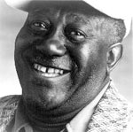
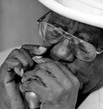
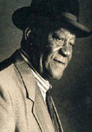

"He is magnificent, displaying a perfect balance of chordal and melodic style"
Living Blues
"I am old, but I am hell"
Snooky Pryor
Snooky Pryor классик чикагского блюза эпохи до Литл Волтера.
Уроженец штата Миссисипи James Edward Pryor (15 сентября 1921) начал играть на гармонике в 8 лет, главными его вдохновителями были оба Санни Боя, стиль которых он использует и до сих пор.

Отслужив в армии, в 40 годах Снуки попадает в Чикаго, на знаменитую Maxwell Street, колыбельную всего современного блюза, где он начинает выступать, используя новшество - усиленную гармонику, его постоянным партнером в это время был гитарист - Moody Jones. В 1947-48 году Snooky Pryor записывает свой первый хит "Boogie", который послужил мотивом для широко известного "Juke" Little Walter'а (1952). Но история умалчивает, кто действительно написал эту классическую вещь.
В середине пятидесятых записывает несколько хитов-синглов для разных фирм и исчезает со сцены на длительное время.
На большую сцену Снуки возвращается в 1987 с альбомом на Blind Pig Rec. - "Snooky". С тех пор и по сей день Pryor продолжает выпускать альбомы и вести активную гастрольную деятельность.

Некоторые высказывания Snooky Pryor:
"Я никогда не был сильно пьющим и никогда не курил, я очень осторожно относился к этому с тех пор как появился на свет. Тем более, я никогда не пробовал наркотики. И я никогда не хотел этого. Muddy Waters, Howling Wolf, Floyd, Moody все они называли меня тупицей, потому что я не закрывался в ванной, чтобы курить это с ними. Я никогда не заботился об этом и мне все равно как тяжело может ударить блюз, я не хотел этого. Если действительно захочешь выжить, ты будешь знать, как это сделать."
Вопрос: "Что блюз значит для Вас?"
Ответ: "Для меня это наследие, наследие которое оставили нам черные, это то, что делает его пленяющим. Именно поэтому блюз никогда не умрет. Блюз для всех, но настоящий блюз идет от его пленяющего чувства, которое обеспечивают некоторые вещи. Вы узнаете, когда блюз придет к Вам, никто не укажет Вам на это."
"Little Walter взял мою композицию "Snooky & Moody's Boogie" и сделал из нее "Juke". Все говорят Little Walter сделал это, но это не так, когда я написал эту вещь, Little Walter все еще был в Луизиане, гонялся за собаками."
Константин Колесниченко [aka Wheel]
bluesharp.inkharkov.com